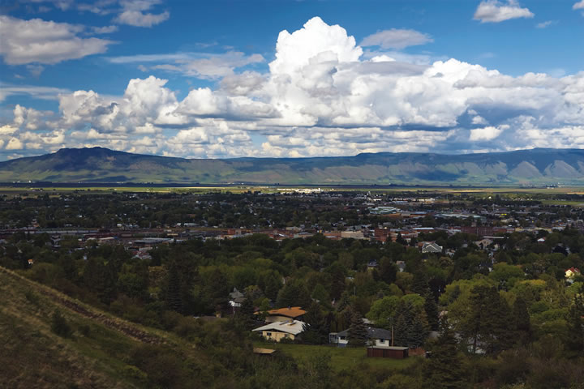

La Grande is a lovely town near some of the most spectacular mountain wilderness in the West, offering exceptional outdoor opportunities. The Wallowa-Whitman National Forest includes 60 campgrounds and more than 1,700 miles of trails. Whitewater rafting is thrilling on the Grande Ronde River. Lehman Hot Springs is one of the biggest hot springs in the West, with a 9,000 square foot pool and temperatures ranging from 85 to 116 degrees. La Grande was a stop on the Oregon Trail - emigrants combined teams here to ascend the steep valley walls to the west. Birnie Park in town and the Oregon Trail Interpretive Park, 12 miles outside of town, commemorate the pioneers’ journey.
Today La Grande is home to Eastern Oregon University, which brings the energy of learning, plus the usual benefits of arts, music, coffee shops and bookstores.
Do you live in La Grande? Have you visited? Please post your comments below.
Population: 12,371
County: Union
Climate: mild, cool and dry year-round
Cost of living index: 90.6
Median home price: $150,300
Alternative energy: net metering and incentives for renewable energy and energy efficiency
Don’t miss: Oregon Trail Interpretive Park
|
 RANDY GREEN La Grande sits in a valley between the Blue Mountains and the Wallowa Mountains. |
|
|